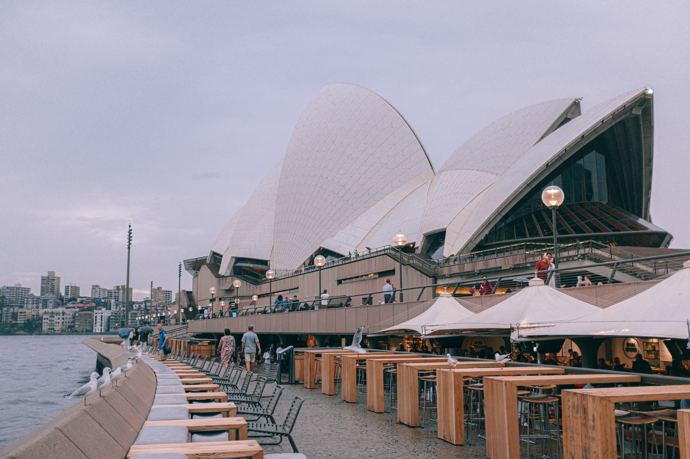

TESTIMONIALS FROM OUR ALUMNI

"In my last year of university, I was unsure of which path to take but doing an intern
in New York has helped me to know that pursuing a career in medical is my calling." ~ Kate

"I have always wanted to go to London and I was set on doing an intern relating to Business during my second last year of university. Think Global has presented me with the best of both and I have definitely gotten out of my comfort zone and have gained skills such as effectively working with others." ~ Shanti

"Doing an intern with Think Global in Hong Kong was exactly everything I wanted. I was glad I got to experience and be in touch with another culture whilst gaining invaluable experiences." ~ Jack

"For sure, this has been the best three months ever!
As I am from Beijing, I wanted to intern overseas to have that extra edge so I chose Sydney, Australia. Also because I have always wanted to see the Sydney Harbour Bridge. I loved how I got to experience the Australian way of life whilst I gained important work experience." ~ Alex